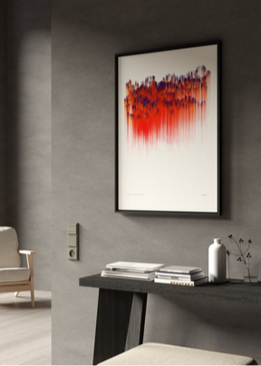
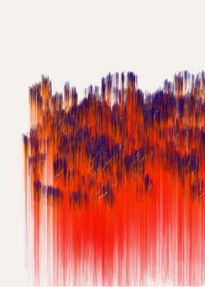
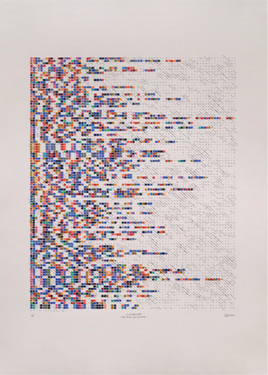
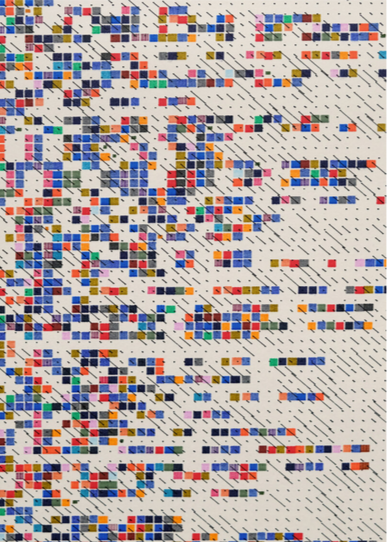
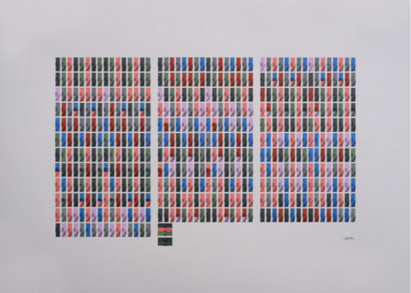
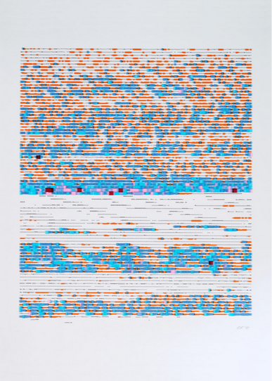
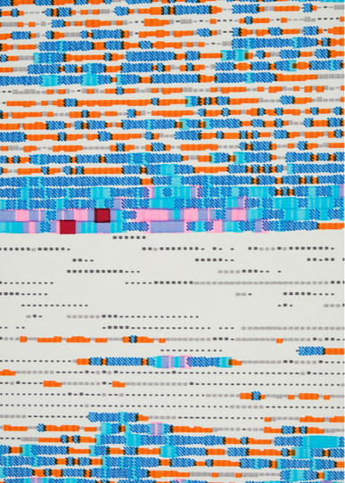
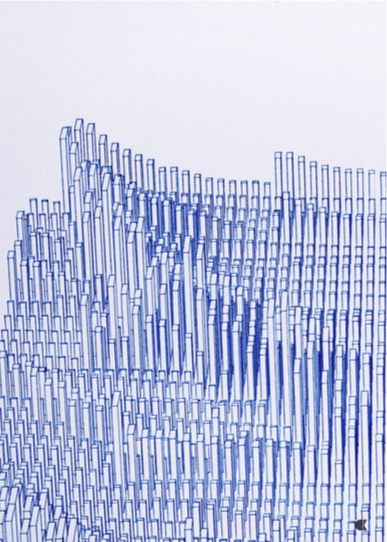
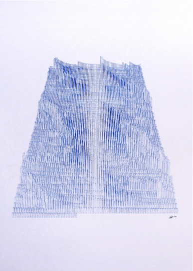

“Familiar Feeling” Moloko
Fine Art Print sur le papier Hahnem-hle PhotoRag 308. 2023.
30x40 cm – Édition limitée de 5 / disponible: 4
50x70 cm – Édition limitée de 5 / disponible: 2
70 x 100 cm – Édition limitée de 5 / disponible: 4




“The Hill We Climb” Amanda Gorman
Stylos à encre pigmentés sur papier, 50 x 70 cm. 2021.
Ltd. Édition de 20 (3 AP)
Disponible: 12
Lettres codées en couleur du poème.Des lignes à croquer en arrière-plan générées à partir des fréquences d'Amanda récitant le poème le jour de l'inauguration
“PRELUDE IN C MAJOR BWV 846” J.S. Bach
Stylos à encre pigmentés sur papier, 70 x 50 cm. 2020.
Ltd. Édition de 3 (1AP)
Disponible: 3


“The Köln Concert part II a” Keith Jarrett
Stylos à encre pigmentés sur papier, 50 x 70 cm. 2018.
Ltd. Édition de 5 (2 AP)
Disponible: 5




“Believe Beleft Below” Esbjörn Svensson Trio
Stylos à encre pigmentés sur papier, 50 x 70 cm. 2018.
Ltd. Édition de 5 (2 AP)
Disponible: 5